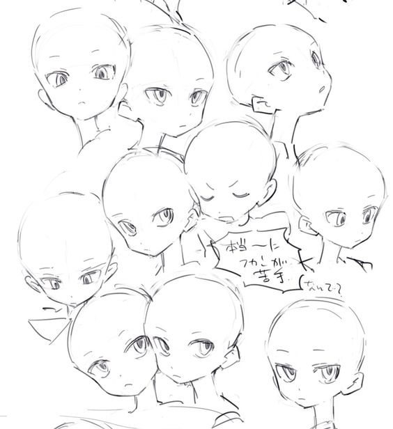
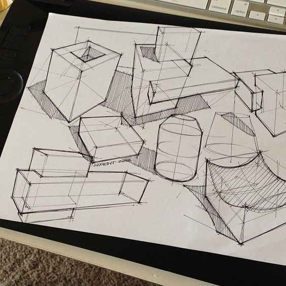
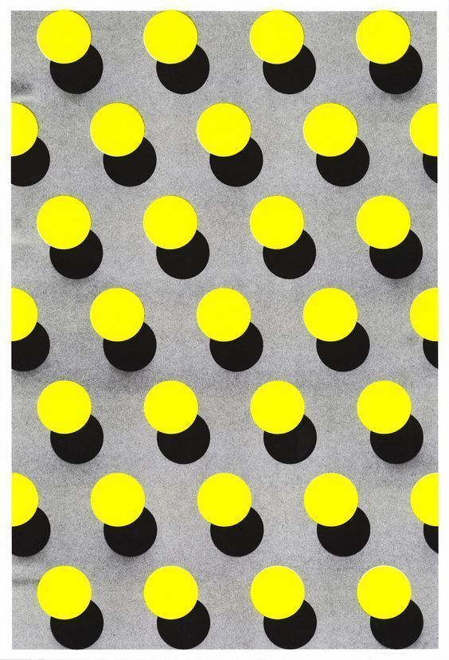
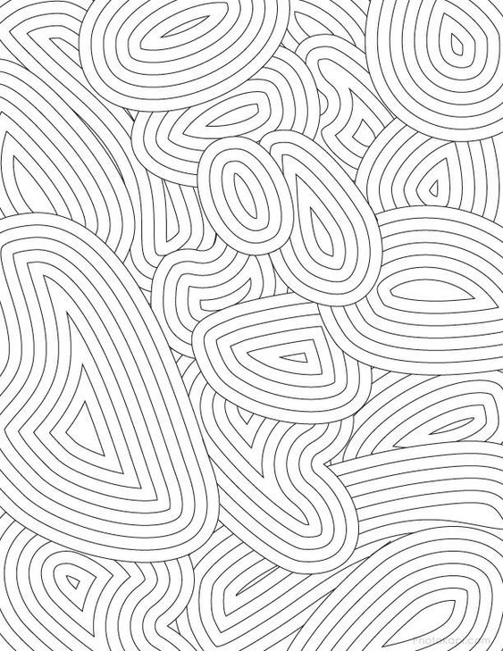

Try a daily sketching challenge to get things going for a week, a month, or perhaps longer. In case you find yourself suddenly inspired by your surroundings, you might want to purchase a sketchbook to carry around with you at all times. You might also be inspired to start drawing by some fresh materials. Practice drawing commonplace items while keeping your objectives in mind. Try creating a drawing of a toothbrush with incredibly realistic features if you want to learn to draw realistically. As your abilities advance day by day, you can start drawing more challenging topics.

Probably in your first few art sessions, you learned how to draw forms, and as your skills improved, you moved on from this exercise. But you can make practically everything you ever create as an artist out of shapes. Shapes can be used to generate original patterns, realistic and unified designs, and efficient use of space. Professional athletes frequently consider a move's components in order to better comprehend how they should perform it. Musicians divide a challenging progression into individual portions and then string them together to rehearse. Regarding drawing, the same idea applies. The shapes should be practised first!

It's always a good idea to move outside of your comfort zone while taking an art class, studying a subject you don't typically draw, or surfing Dribbble for inspiration. K eep in mind that learning only happens when you fail. Perhaps you'll discover inspiration by taking an online painting class, watching a YouTube instructional, exploring a new location, or checking out a new band. To develop your sketching abilities, you must put in the time and work. Imagine what you could learn if you took drawing lessons for a week.

Designing recurring patterns like icons, symbols, or other combinations of shapes can be a fantastic workout to hone your skills in addition to starting with the fundamentals (shapes). Try making a pattern with only circles or using a variety of shapes. Fine motor abilities and pen or brush control are developed by repeating a pattern throughout a page or all over it. Although it's challenging to complete without becoming tired, you'll be equipped the next time you need to draw a complex pattern, shape, or subject. Additionally, this ability has practical uses like wallpapers.